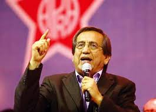

| Miguel Torres | Fuerza Popular | |
Abogado y excongresista. |
| Fernando Rospigliosi | Fuerza Popular | |
Politólogo y exministro del Interior. |
| Carmen Juárez | Fuerza Popular | |
Abogada y excongresista. |
| Martha Moyano | Fuerza Popular | |
Política y excongresista. |
| César Acuña | Alianza para el Progreso | |
Empresario y político. |
| Rafael López Aliaga | Renovación Popular | |
Ingeniero y empresario. |
| José Luna Gálvez | Podemos Perú | |
Empresario y político. |
| Roberto Sánchez | Juntos por el Perú | |
Sociólogo y exministro. |
| George Forsyth | Somos Perú | |
Exfutbolista y exalcalde. |
| Alfredo Barnechea | Acción Popular | |
Periodista y político. |
| María del Carmen Alva | Acción Popular | |
Abogada y excongresista. |
| Yonhy Lescano | Acción Popular | |
Abogado y excongresista. |
| Fiorella Molinelli | Fuerza y Libertad | |
Economista y exfuncionaria. |
| Rafael Belaunde | Libertad Popular | |
Empresario y político. |
| Marisol Pérez Tello | Primero la Gente | |
Abogada y exministra de Justicia. |
| CESAR AUGUSTO CALDERON GUZMAN | Partido Cívico Obras | |
CHOFER - AREA LOGISTICA. |
| Herbert Caller | Partido Patriótico | |
Abogado y político. |
| Ruth Luque | Juntos por el Perú | |
Abogada y congresista. |
| Diego Bazán | Avanza País | |
Congresista y político joven. |
| Adriana Tudela | Avanza País | |
Abogada y congresista. |
| MARIA JUDITH TORRES AMASIFUEN DE HERNANDEZ | Independiente | |
Economista y analista. |
| Jorge Salas | Independiente | |
Administrador público. |
| JOSE DANIEL WILLIAMS ZAPATA | Independiente | |
CONGRESISTA |
| Luis Herrera | Independiente | |
Ingeniero civil. |
| PATRICIA MERCEDES VILLALOBOS LOPEZ | Independiente | |
Abogada. |
| Sofía Quispe | Independiente | |
Especialista en educación y políticas sociales. |
| Kevin Roman | Independiente | |
Docente y gestor público local. |
| Andrés Villanueva | Independiente |  |
Abogado constitucionalista. |
| Julio Rivera | Independiente | |
Jurista y asesor legal. |
| Carlos Espá | Independiente | |
Economista. |